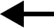

From Madness, Rack and Honey by Mary Ruefle

In life, the number of beginnings is exactly equal to the number of endings:
no one
has yet to begin a life who will not end it.
Paul Valéry, the French poet and thinker, once said that no poem is ever ended, that every poem is
merely abandoned. This saying is also attributed to Stéphane Mallarmé, for where quotations begin is
in a cloud.
Paul Valéry also described his perception of first lines so vividly, and to my mind so accurately,
that i have never forgotten it: the opening line of a poem, he said, is like finding a fruit on the
ground, a piece of fallen fruit you have never seen before, and the poet’s task is to create the tree
from which such a fruit would fall.
In the beginning was the Word. Western civilization rests upon those words. And yet there is a lively
group of thinkers who believe that in the beginning was the Act. that nothing can precede action—no
breath before act, no thought before act, no pervasive love before some kind of act.